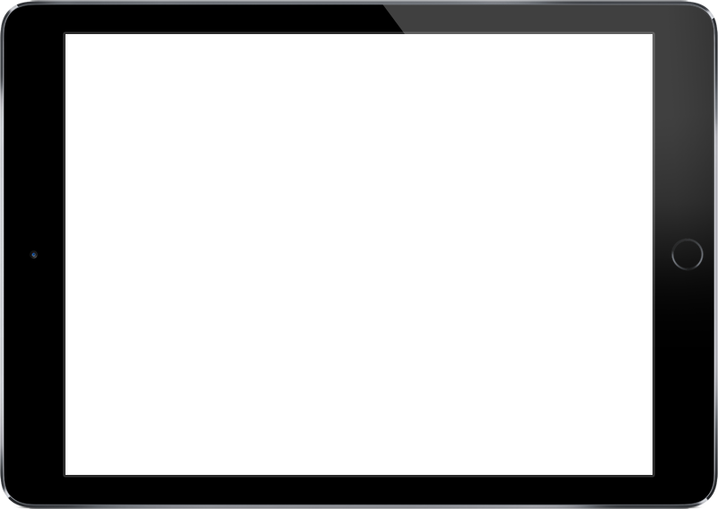
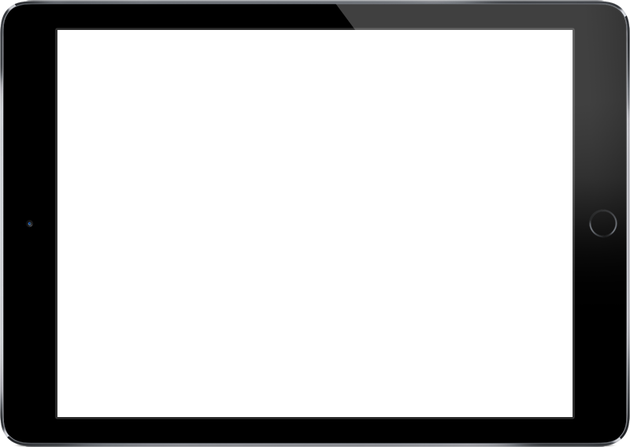

SMK Telkom Malang adalah pelopor Sekolah menengah kejuruan pertama di Indonesia di bidang Teknologi dan Informatika. Berpengalaman dari tahun 1992 yang telah terakreditasi "A" dan mempunyai standart mutu ISO 9001:2008.
Banyak kompetisi di bidang IT maupun non-IT yang banyak diraih oleh siswa-siswi SMK Telkom Malang. Segala prestasi tersebut sangat membanggakan sekolah dan dapat menjadi bekal untuk meraih masa depan yang gemilang.
 



media sosial
Jl. Danau Ranau Sawojajar
Kota Malang
0341-712500
info@smktelkom-mlg.sch.id
Senin - Jumat
06:15 - 15.30
Copyright 2019 © SMK Telkom Malang. All rights reserved.
Created By "kamal" to complete the project